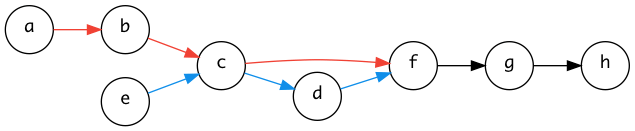
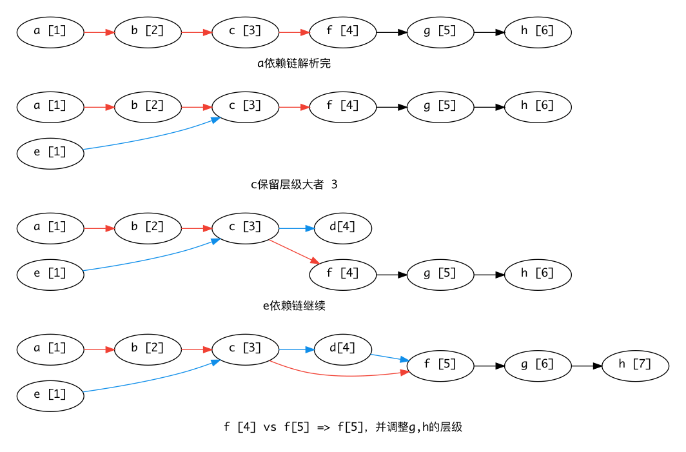
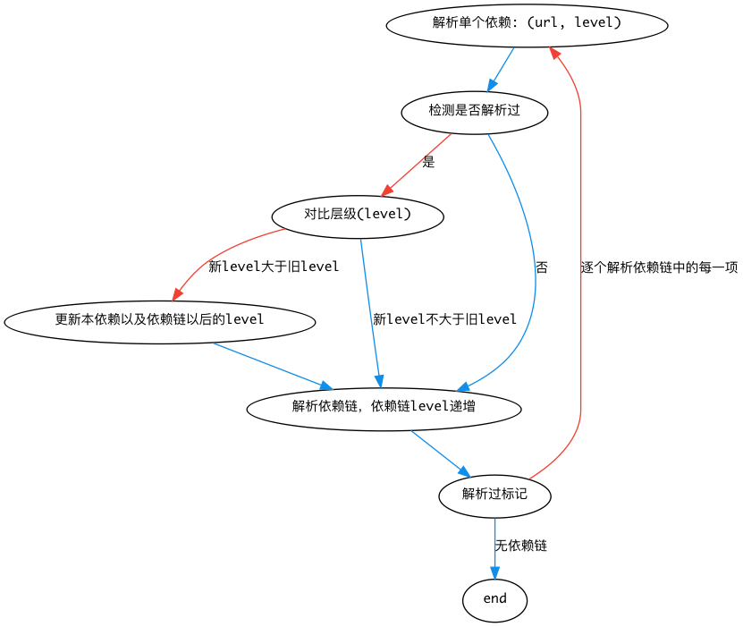

| 创建时间： | 2017/5/25 13:15 |
| 来源： | https://techblog.toutiao.com/2017/05/09/cdn/ |
痛点：
在部分用户的网络环境中，页面CDN域名被劫持，导致前端资源无法正常加载，而页面主域名正常，导致页面可以访问，但是功能不正常。
背景：
通常来说，主域名一般都是众所周知的域名，运营商一般不会劫持（本文特指劫持后导致无法加载，注入这些不在本文考虑范围内），主域名被劫持的可能性小。因为被劫持后，用户无法访问自然能够很明显感知到这是网络问题（鉴于挂掉情况可能性较小）。而CDN域名一般鲜为人知，运营商由于商业目的可能会劫持部分域名，于是就会导致页面html结构出来了，样式和交互都不正常，用户可能会认为这是产品的问题，很少会认为这是网络问题。
解决方案：
CDN和主域名都同时承载资源，优先CDN加载，在CDN加载失败的情况下，切换到主域名再次加载资源。
难点：
在每个script或者link标签中添加onerror属性，捕捉加载错误。
<script onerror="catachError(this)"></script>
注：window全局onerror是无法捕捉404、503等script或者link加载错误的，因为onerror事件并不会冒泡上传。
优点：能够准确捕捉资源加载失败的场景，并及时处理。
缺点：代码入侵性强，不能够很好的复用。对于fis利用占位来添加css或者js的方式支持比较困难。
在html最后加一段js，使用 HEAD 请求对所需要检测的资源进行检测，如果返回404或者503，则触发加载失败重新加载机制。
注意：由于是用XHR发送HEAD请求，需要CDN方面支持跨域。
这么多资源，这么多检测请求会不会带来额外的流量消耗和延迟？
资源一般来说都加了缓存，在正常网络下，HEAD请求会从本地缓存中返回结果，不会真正发送http请求到服务器，不会有额外消耗流量，增大延迟。
但是资源加载失败的情况下，会消耗额外的流量、增大延迟。尤其是在网络返回延迟比较大的情况下，延迟会比较大。（但是这种情况，挽救的意义不大）
错误捕捉一定准确吗？
在资源加载完成和检测之间，如果网络情况出现变化，就有可能导致误判。
当资源在加载时成功返回，而在检测时加载失败时会导致资源加载两次，仅仅针对无缓存资源而言。对于有缓存资源，加载完成之后，网络情况出现变化，HEAD请求已经感知不到了，因为HEAD请求就会走本地缓存，而不会发送到网络当中。
当资源在加载时加载失败，而在检测时成功返回时，检测无效。以上情况出现概率比较小，需要出现在资源加载成功与失败之间的微小时差中产生，几乎可以忽略不计。
优点：检测代码能够和业务代码很好的分离，能够检测到绝大部分资源加载失败的场景。
缺点：
编写类似labjs、requirejs但是支持fallback切换其他域名的加载器来加载资源，能够在js中利用onerror来准确捕捉加载错误，并且能够比较好的协调资源加载。
load('mp.toutiao.com', 'cdn.com', [
'a.js',
'b.js',
'c.js'
]);
以下为简要代码，以做理解，使用该方案时请根据各自业务而定
const loadScript = (url) => {
return new Promise((resolve, reject) => {
const script = document.createElement('script');
script.src = url;
script.onload = () => {
resolve();
};
script.onerror = () => {
reject();
};
document.appendChild(script);
});
};
const loadOne = (mainDomain, secondaryDomain, url) => {
return loadScript(`//:${mainDomain}/${url}`)
.then(() => {}, () => {
return loadScript(`//:${secondaryDomain}/${url}`);
});
}
const load = (mainDomain, secondaryDomain, urls) => {
const promise = new Promise((resolve, reject) => resolve());
urls.forEach(url => {
promise.then(() => loadOne(mainDomain, secondaryDomain, url));
});
};
但和labjs和requirejs不同的是，labjs和requirejs一般用于管理依赖以及按需加载，而针对检测错误重加载的加载器用于检测加载错误并切换源重新加载，有更好的加载错误重新加载机制，需要覆盖页面中所有的css、js等资源。
优点：能够准确捕捉错误，且能够在加载失败并重试新域名的情况下保证正确的js执行顺序。
缺点：
有可能导致白屏时间变长，资源加载时间会变长
css、js的加载都会在加载器执行后再进行加载，而且浏览器无法识别将要加载哪些资源，不能进行并行预加载，导致css、js加载比较慢。且对于js而言，需要按顺序执行，加载器只能按顺序串行加载，加载完一个再加载另一个，相对于浏览器的自动并行加载，js加载时间会变长。
对于后端吐模板的页面，会出现暂时性布局乱和闪屏的情况
后端吐模板的页面，一般来说，页面响应之后，html大致结构就出来了。如果使用加载器加载，css的加载会晚于页面显示的时间，会导致暂时性的页面布局没有样式只有html结构的情况。
普通页面来说，css一般放在head里，当浏览器解析页面的时候，解析到link的时候，浏览器会去加载资源，同时继续解析html，生成DOM树，等到css加载完成、Style Rules树也完成后，页面才会render，你就会看见一个有样式的页面。
而对于加载器加载css的情况，在css加载完成之前，页面就显示了，就是一丢丢没有样式的html。等到css加载完成后，页面在repaint/reflow一下，闪屏一下，页面才显示正常。
对于没有采用labjs、requirejs等加载器的项目而言，改动成本比较大。
Resource Timing API（chrome和firefox等）不能检测到加载失败的资源，只能获取到加载成功的资源的加载时间数据。
既然Resource Timing API 不能检测到加载失败的资源，那么不能被检测到的，自然就是加载失败的资源。通过这个原理可以准确捕捉到所有加载失败的场景。
// 所有css+js资源
var allResources = Array.from(document.getElementsByTagName('script'))
.map(script => script.src)
.concat(
Array.from(document.getElementsByTagName('link'))
.filter((link) => link.rel === 'stylesheet')
.map((link) => link.href)
);
// 加载成功的css+js资源
var loadedResources = performance.getEntriesByType('resource')
.filter((res) => {
var url = res.name;
var urlWithoutParam = url.split('?')[0];
return ['script', 'link'].indexOf(res.initiatorType) !== -1 &&
[/\.css$/, /\.js$/].some((reg) => reg.test(urlWithoutParam));
})).map((res) => res.name);
// 加载失败的css+js资源
var failedResources = allResources.filter((url) => loadedResources.indexOf(url) === -1);
IE并不支持这个方案，因为在IE中，加载失败的资源会被包含在PerformanceResourceTiming中，而chrome、firefox等其他浏览器大部分并不包含。且并不能很好地区分加载失败和加载成功的资源（尤其是404）。
详情请看Clarify presence of requests that don't return a response
翻了下W3C文档 resource-timing-1
Aborted requests or requests that don't return a response may be included as PerformanceResourceTiming objects in the Performance Timeline of the relevant context.
注意里面有一个may，这就很尴尬了。
优点：准确率高，代码也比较容易分离，无延迟。
缺点：对于Safari以及IE 11一下不支持。
var links = document.queryAllSelector('link');
var failedCss = Array.from(links)
.map((link) => link.sheet && link.sheet.rules.length === 0);
优点： 准确率高，浏览器兼容性好
缺点：仅仅适用于css资源，且对于跨域无效。
当你看到此方法的标题时，或许你会觉得这个方法和1.1没什么区别。全局onerror不能捕捉到加载错误的原因1.1已经提及，那为什么window.addEventListener却能捕获加载错误呢？
HTML中事件传播机制有两种，一个是冒泡，另一种是捕获。
通过捕获，能够在全局捕获到加载错误。
window.addEventListener('error', () => {
// to do your things.
}, true);
从Webkit源码来解释一下为什么
// Source/WebCore/dom/ScriptElement.cpp
void ScriptElement::dispatchErrorEvent()
{
m_element.dispatchEvent(Event::create(eventNames().errorEvent, false, false));
}
// Source/WebCore/dom/Event.h
class Event : public ScriptWrappable, public RefCounted<Event> {
public:
// ... 省略部分代码
static Ref<Event> create(const AtomicString& type, bool canBubble, bool cancelable)
{
return adoptRef(*new Event(type, canBubble, cancelable));
}
// ... 省略部分代码
}
可以看到，加载错误的event中 canBubble: false, cancelable: false。自然用通常的冒泡机制不能捕捉加载错误，需要用捕获的方式来捕捉加载错误。同理代码也可以在HTMLLinkElement.cpp等资源加载的场景中看到。
仅仅能够捕获加载错误还是不够的，还需要区分加载错误和其他错误，因为该方法也能够捕捉语法错误等一系列错误事件。
细心的你可能会发现，普通的错误会有message错误信息，而加载错误是没有message错误信息。
// Source/WebCore/dom/ErrorEvent.cpp
ErrorEvent::ErrorEvent(ExecState& state, const AtomicString& type, const Init& initializer, IsTrusted isTrusted)
: Event(type, initializer, isTrusted)
, m_message(initializer.message)
, m_fileName(initializer.filename)
, m_lineNumber(initializer.lineno)
, m_columnNumber(initializer.colno)
, m_error(state.vm(), initializer.error)
{
}
ErrorEvent::ErrorEvent(const String& message, const String& fileName, unsigned lineNumber, unsigned columnNumber, JSC::Strong<JSC::Unknown> error)
: Event(eventNames().errorEvent, false, true)
, m_message(message)
, m_fileName(fileName)
, m_lineNumber(lineNumber)
, m_columnNumber(columnNumber)
, m_error(error)
{
}
// Source/WebCode/dom/ScriptExecutionContext.cpp
bool ScriptExecutionContext::dispatchErrorEvent(const String& errorMessage, int lineNumber, int columnNumber, const String& sourceURL, JSC::Exception* exception, CachedScript* cachedScript)
{
// ... 省略部分代码
Ref<ErrorEvent> errorEvent = ErrorEvent::create(message, sourceName, line, column, error);
// ... 省略部分代码
}
由以上代码联系js代码可以看出，ErrorEvent继承与Event是显然的，而且ErrorEvent比Event多了message、filename、lineno、colno、error这些信息。执行错误、语法错误以及自定义抛出的异常错误，都源自ErrorEvent，都包含了message等错误信息。而加载错误并不是源自ErrorEvent，而是直接源自Event，不包含message等错误信息。由!e instanceof ErrorEvent即可辨别出加载错误。再来看看W3C的说明
https://www.w3.org/TR/html5/document-metadata.html#the-link-element
Once the attempts to obtain the resource and its critical subresources are complete, the user agent must, if the loads were successful, queue a task to fire a simple event named
loadat thelinkelement, or, if the resource or one of its critical subresources failed to completely load for any reason (e.g. DNS error, HTTP 404 response, a connection being prematurely closed, unsupported Content-Type), queue a task to *fire a simple event namederrorat thelinkelement *. Non-network errors in processing the resource or its subresources (e.g. CSS parse errors, PNG decoding errors) are not failures for the purposes of this paragraph.
https://www.w3.org/TR/html5/scripting-1.html#the-script-element
If the load resulted in an error (for example a DNS error, or an HTTP 404 error)
Executing the script block must just consist of *firing a simple event named
error*at the element.
Firing a simple event named e means that a trusted event with the name e, which does not bubble (except where otherwise stated) and is not cancelable (except where otherwise stated), and which uses the
Eventinterface, must be created and dispatched at the given target.
注意firing a simple event named error 。通过搜索查阅W3C文档，named error event都是由于资源加载失败而抛出的，根据文件类型过滤出来css和js即可。
由此可见，可以区分加载错误和其他错误。
优点：准确
缺点：低版本IE浏览器存在兼容性问题，但大部分浏览器支持情况较好
对比以上情况，拟采用window.addEventListener捕获的方法来实现检测资源加载失败的情况。
再把场景扩大一点，我们可能希望支持更多场景：
总的来说，就是支持自定义重加载关系。
要做到准确重加载需要做到两步：
如果只是简单的重新加载剩余的js，这个倒不是什么问题。但是如果要支持自定义重加载关系，那这里就有点文章。资源依赖关系交叉了如何解决？有以下依赖关系:

箭头表示依赖链关系，例如a->b，则说明b依赖于a，a需要在b之前执行。
很显然a、b、e要d之前加载，且f要在d之前加载。这并不是简简单单的去重这么简单，在红线链中，c在第3个位置，而在蓝线中，c在第2个位置。如果各自都按照顺序加载，那么就会造成b和c同时加载。
那么解析依赖关系的过程中应该标记一个层级关系。对于重复的依赖，比较依赖层级，选择大者，并且更新子依赖的层级。

注：[n]表示层级n，层级递增排序组成加载队列，每个层级包含一个资源数组，层级内资源无先后顺序。

处理完成后，只需要对层级进行排个序，按照层级顺序加载，依赖自然就OK了。从以上例子来说，a和e可并行加载，两者先后顺序并无相互影响，其次是b、c等。
加载一个script很简单，加载很多script也很简单，加载很多有顺序关系的script就有点文章了。
显然这不是什么难点，promise化连续加载就好了。
但是问题也接着来了。
以上，用promise是不值得的。考虑第一个问题，自己写回调不就好了嘛。但是写回调第二个问题也依然存在。
模拟浏览器加载和执行js的方案，把加载和执行分开，用XmlRequest并行加载资源，然后用eval按依赖顺序执行代码。比较头疼的是，302、301就尴尬了，还得自己处理。加上跨域，就更头疼了（跨域需静态资源提供方配合解决）。
哎，浏览器本来就有一套加载的方案，还得自己用xml http request写一套多麻烦，何不直接document.write呢，执行顺序也不用管了，浏览器都包了。
const load = (deps) => {
document.write(
deps
.map(dep => `<script src="${dep}"></script>`)
.join('')
);
};
但是，一定要确保在DomContentLoaded之前，否则你将看到白刷刷的一片。那问题就来了，如何确保在loaded之前检测完错误，并write依赖到body中。
那么addEventListener则需要放到head里的最开始的地方（在任何资源加载之前即可），在body末尾插入依赖解析和加载。在html解析开始的时候开始监听加载错误事件，在html解析将结束时开始依赖解析和加载。
<html>
<head>
<script>
const errors = [];
window.addEventListener('error', (e) => {
if (!(e instanceof ErrorEvent)) {
errors.push(e);
}
}, true);
</script>
</head>
<body>
<script>
// 解析错误，提取依赖，write依赖
</script>
</body>
</html>
最终实现方案： window.addEventListener捕获方式来完成检测，document.write来完成加载和执行。